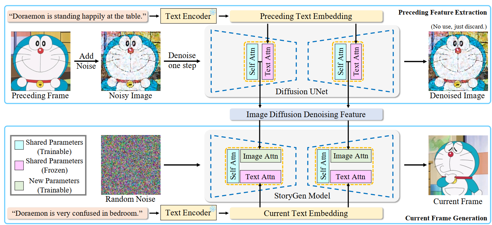

|
I am a second-year PhD student of MediaBrain at Shanghai Jiao Tong University (SJTU), advised by Prof. Weidi Xie. I received my Bachelor degree in Computer Science, also from Shanghai Jiao Tong University. I'm generally interested in computer vision, image processing and generative models. My current research interest lies in object counting and diffusion models. |
{kind=link}
|  |
Chang Liu*, Haoning Wu*, Yujie Zhong, Xiaoyun Zhang, Weidi Xie arxiv Preprint, 2023 project page / arXiv / code In this work, we focus on the task of generating a series of coherent image sequence based on a given storyline, denoted as open-ended visual storytelling. |

|
Chang Liu, Yujie Zhong, Andrew Zisserman, Weidi Xie BMVC, 2022 project page / arXiv / code In this paper, we consider the problem of generalised visual object counting, with the goal of developing a computational model for counting the number of objects from arbitrary semantic categories, using arbitrary number of exemplars, i.e. zero-shot or few-shot counting. |
Based on a template by Jon Barron. |